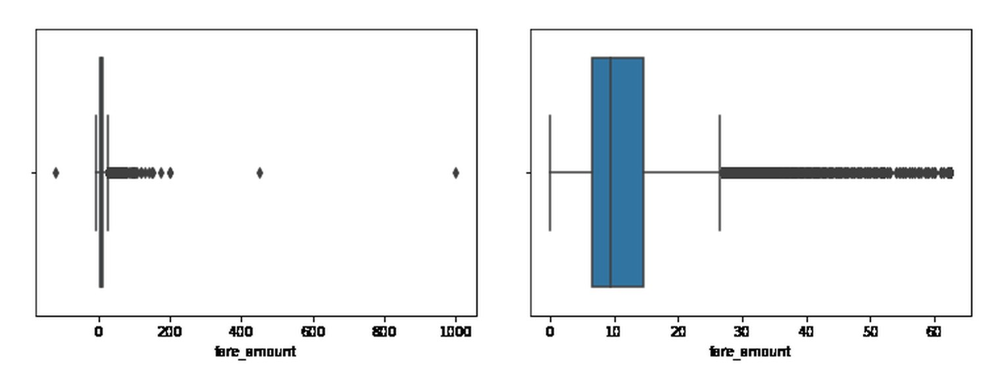
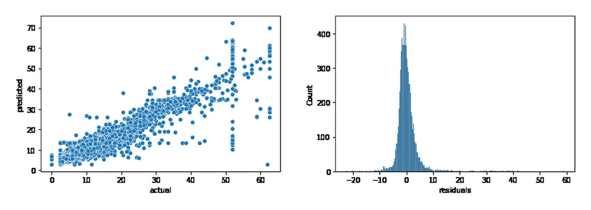
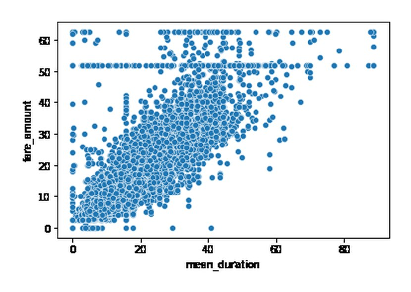

Modelo de tarifas de taxi
Estimar cuánto costará un taxi en Nueva York antes de subir, sabiendo solo de dónde sale, a dónde va y a qué hora. Un modelo de regresión lineal múltiple que explica el 87 % de la variación de la tarifa con un error medio de $2.16.
- Rol
- Análisis y modelado, trabajo individual
- Contexto
- Proyecto final · Google Advanced Data Analytics
- Datos
- 22,699 viajes · NYC TLC, 2017
- Herramientas
- Python, pandas, statsmodels, scikit-learn
El problema
La Comisión de Taxis y Limusinas de Nueva York quería mostrar al pasajero una tarifa estimada antes del viaje. La trampa está en los datos: las dos variables que mejor explican la tarifa — distancia y duración — solo existen cuando el viaje ya terminó. Un modelo entrenado con ellas se ve excelente en el notebook y es inútil en producción.
Cómo lo abordé
Seguí el marco PACE del programa — planificar, analizar, construir, ejecutar — y documenté cada decisión en un documento de estrategia aparte.
- Exploración de 18 columnas: duplicados, nulos, tipos y valores imposibles
- Duraciones y tarifas negativas llevadas a cero; valores extremos acotados en Q3 + 6·IQR
- Variables nuevas conocibles antes del viaje: distancia y duración promedio de cada par origen–destino (4,172 pares) y un indicador de hora punta
- Codificación de variables categóricas, estandarización y partición entrenamiento/prueba 70/30
- Regresión por mínimos cuadrados ordinarios con statsmodels, evaluada con R², MAE y RMSE en ambos conjuntos
La decisión que define el modelo
En lugar de la distancia real del viaje, el modelo usa la distancia y duración promedio históricas de esa misma ruta. Es información que el sistema ya tiene cuando el pasajero pide el taxi, así que el modelo puede usarse de verdad. Cuesta algo de precisión frente a usar los datos reales, y a cambio produce una estimación que se puede mostrar antes de que el viaje empiece.

Resultados
- R² en prueba
- 0.874
- Error absoluto medio
- $2.16
- RMSE
- $3.67
- R² en entrenamiento
- 0.870
El desempeño en prueba es igual al de entrenamiento, así que el modelo no está sobreajustado. Entre las variables continuas, la distancia promedio de la ruta es la que más pesa: una desviación estándar adicional suma unos $5.90 a la tarifa, frente a $3.40 de la duración promedio. La hora punta apenas mueve la estimación.

Lo que encontré en los datos
Al graficar duración contra tarifa apareció una línea horizontal perfecta en $52: muchos viajes de duración muy distinta con exactamente el mismo precio. Es la tarifa plana entre el aeropuerto JFK y Manhattan. El modelo la absorbe a través del código de tarifa, que resultó ser la variable de mayor efecto sobre el precio.

Lo que cambiaría
La distancia y la duración promedio están muy correlacionadas entre sí, lo que hace inestables sus coeficientes aunque no afecte la predicción. Revisaría el factor de inflación de la varianza y me quedaría con una de las dos si el objetivo fuera interpretar. Y calcularía los promedios por ruta solo con el conjunto de entrenamiento: calcularlos sobre todos los datos deja pasar información del conjunto de prueba al modelo.
Entregables
Ver el notebook Notebook · .ipynb Resumen ejecutivo · .pptx Estrategia PACE · .docx Certificado Repositorio en GitHub
Proyecto final del curso Regression Analysis: Simplify Complex Data Relationships del programa Google Advanced Data Analytics en Coursera. Automatidata es la consultora ficticia del caso; los datos son una muestra pública de viajes de taxi amarillo de Nueva York de 2017. Entregables en inglés, como se presentaron en el curso.